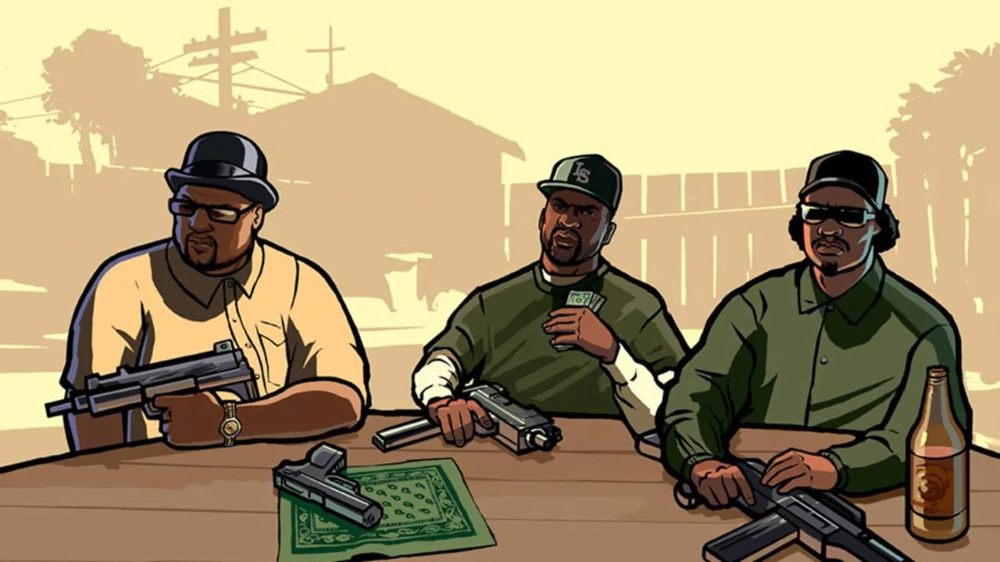
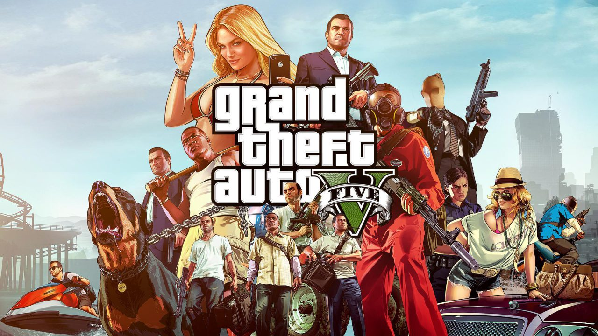

Introductie
Welkom op mijn website. Deze website gaat over de top 3 beste Grand Theft Auto games ooit. Deze top 3 is gebaseerd op mijn mening en mijn evaring met deze games. Gebruik de navigation bar voor meer informatie over deze spellen en de uitgever.
1. GTA San Andreas
GTA San Andreas is naar mijn mening de beste GTA game die tot nu toe is uitgekomen. Het spel kwam uit in 2004, maar was zijn tijd ver vooruit. In dit spel kun je dingen doen die in de latere games niet kunnen. Je kunt bijvoorbeeld naar de sportschool gaan om heel sterk en gespierd te worden (je moet dan wel goed op je voeding letten). Ook is het mogelijk om cheat codes te gebruiken. Je kunt cheat codes gebruiken om spullen te krijgen die je normaal niet kan krijgen. Een goude game zou ik het noemen en het is zeker een aanrader.

2. GTA 5
GTA 5 is voor de meeste mensen de beste GTA game die tot nu toe is uitgekomen, maar op mijn lijst staat de game op nummer twee. Het is een toffe game, maar naar mijn mening is GTA 5 niet beter dan GTA San Andreas. GTA 5 heeft een bepaalde feature die de andere GTA games niet hebben, namelijk online spelen met je vrienden. Je kunt met 29 andere mensen in een session spelen. Verder kun je in deze game een eigen business starten om geld te verdienen. Je kunt auto's, speciale ladingen en nog veel meer verkopen met je bedrijf. Dit kun je alleen doen, maar het kan ook met vrienden door hen te laten werken voor jouw bedrijf. Het is zeer zeker een aanrader.

3. GTA 4
In vergelijking met de twee games hiervoor is GTA 4 de slechtste game. Er zijn een heleboel nieuwe features in de game die andere games niet hebben, omdat deze game op een compleet nieuwe engine draait en dus is de gameplay veranderd ten opzichte van de games ervoor. Er zijn ook een heleboel oude en ook goede features weggelaten in deze game. Daarom krijgt GTA 4 van mij een mooie spot op nummer drie.